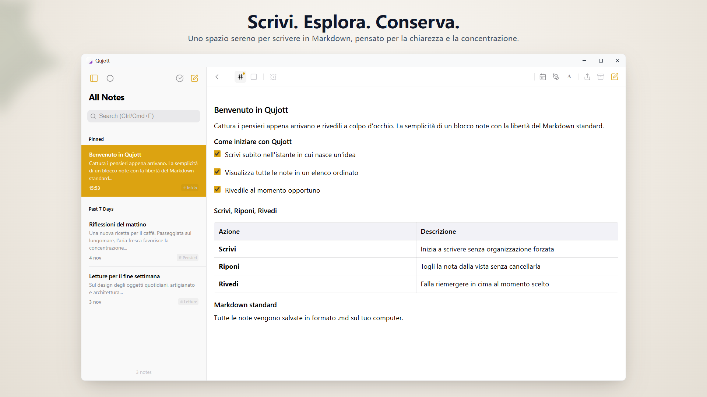
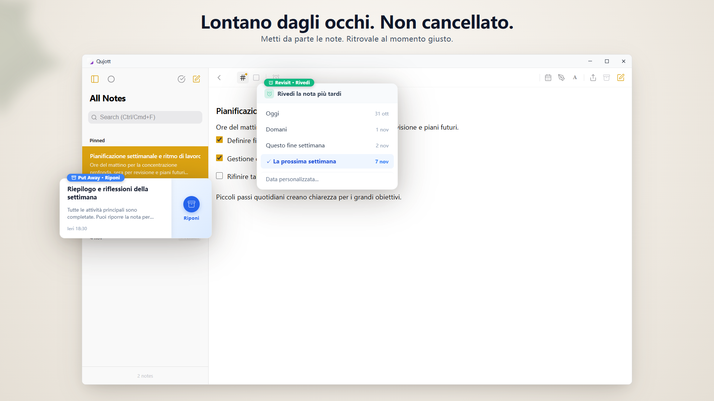
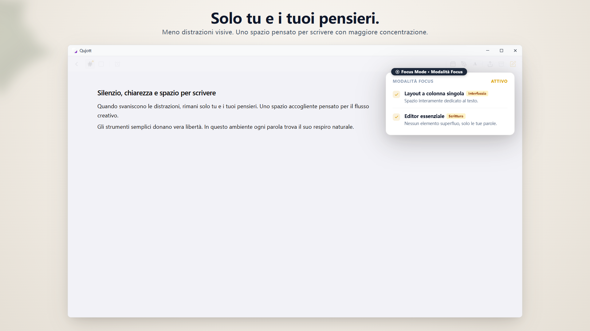
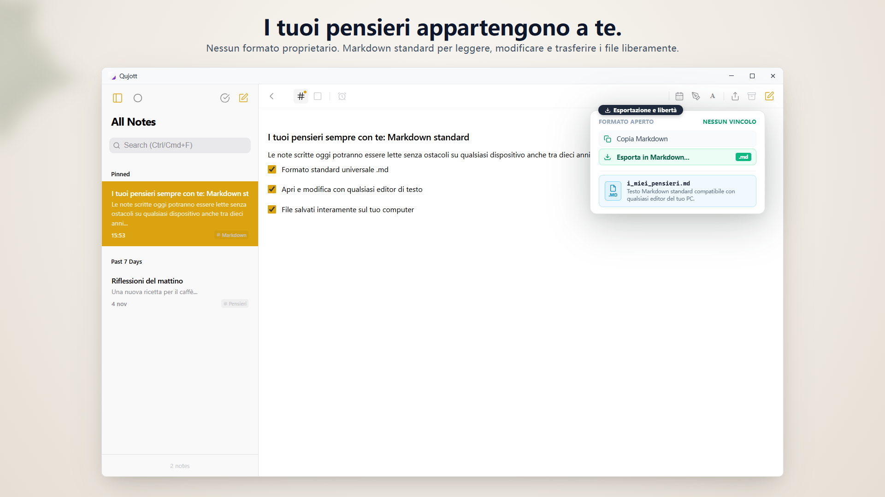
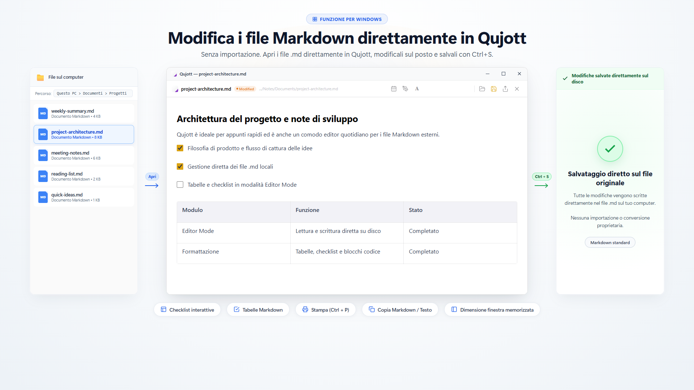
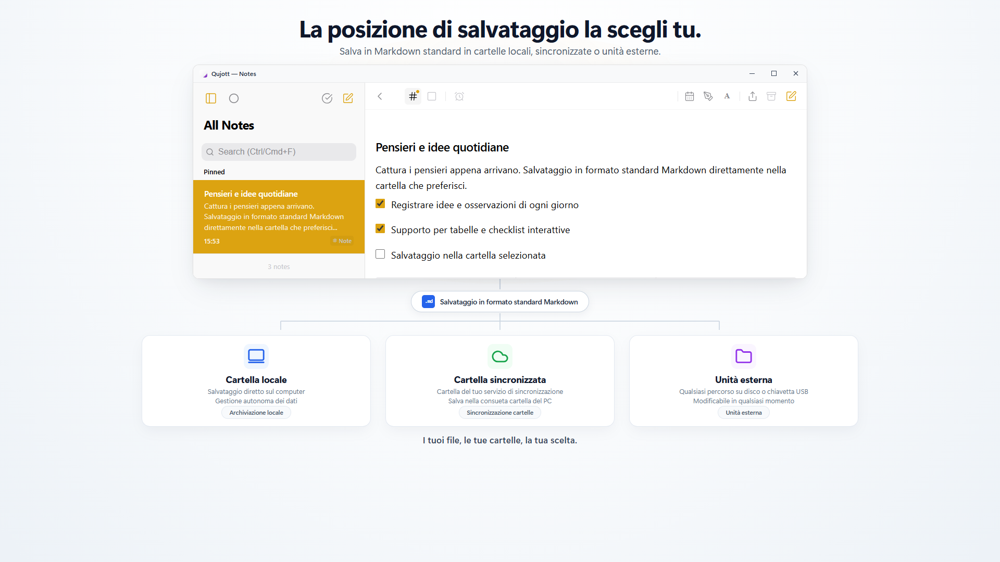
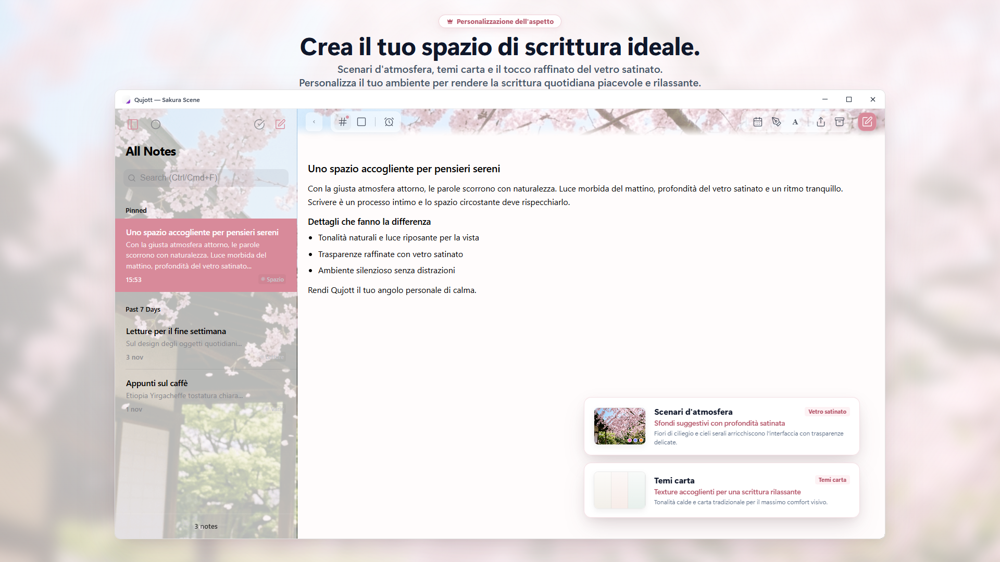
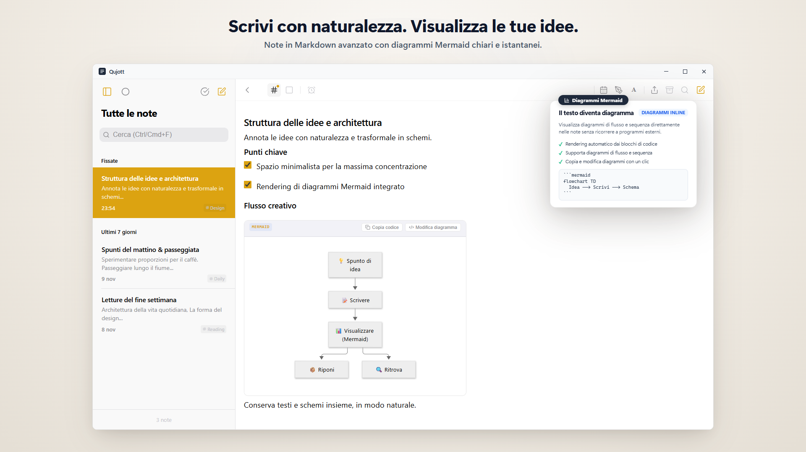
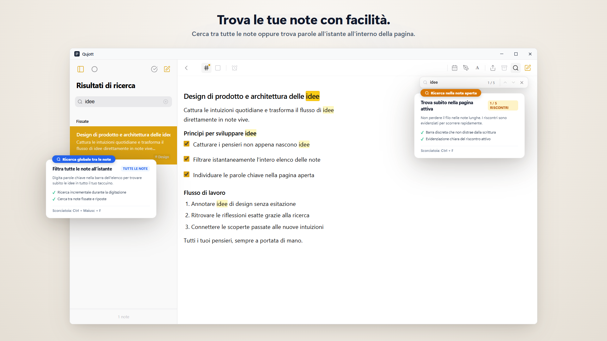

Qujott
Cattura i tuoi pensieri con facilità,
e ritrovali quando vuoi.
Qujott combina l'immediatezza e la chiarezza di un taccuino cartaceo con la versatilità di un editor di testo in un formato digitale essenziale.
Organizza in seguito. Tieni i tuoi pensieri sempre vicini.
Supporta il formato standard Markdown. Salva e modifica le note come file di testo normale, dove preferisci tu.

Uno spazio a due colonne pulito ed essenziale che mantiene pensieri ed elenco note sempre sott'occhio
Come un taccuino di carta accanto alla tastiera.
Qujott non è pensato per la gestione complessa delle attività o per creare enormi database di conoscenza.
Proprio come un bloc-notes cartaceo poggiato sulla scrivania, è progettato per un unico scopo: iniziare a scrivere nell'istante esatto in cui nasce un'idea.
Non serve scegliere in anticipo una cartella né inserire tag obbligatori.
Cattura i pensieri così come si presentano e tienili a portata di mano. Potrai riordinarli in seguito con tutta calma.
Riponi le note e ritrovale al momento giusto.
Una volta scritta una nota, non occorre cancellarla: basta nasconderla con «Riponi» (Put Away) per mantenere ordinata la vista di lavoro.
Impostando «Rivedi» (Revisit), la nota riapparirà delicatamente in cima all'elenco oggi, domani o la prossima settimana. Senza allarmi fastidiosi né notifiche.

Mantieni pulito lo spazio di lavoro senza eliminare le note importanti. La nota riapparirà delicatamente in cima all'elenco al momento opportuno: oggi, domani o la prossima settimana.
Immergiti nella scrittura, senza distrazioni.
Nascondi la barra laterale e passa al layout essenziale a colonna singola con la «Modalità Focus» (Focus Mode).
Elimina ogni elemento superfluo dall'interfaccia per concentrarti unicamente sulle parole e sul filo dei tuoi pensieri.

Il layout essenziale a colonna singola riduce il disordine visivo, offrendoti uno spazio tranquillo per concentrarti sulla scrittura e sui tuoi pensieri.
Le tue parole rimangono sotto il tuo controllo.
Tutte le note sono salvate nel formato standard aperto Markdown (.md).
Nessun vincolo a formati proprietari (No lock-in). Puoi aprirle, modificarle, esportarle o crearne copie di backup in qualsiasi momento tramite Esplora file di Windows o un editor di testo compatibile.

Tutte le note vengono salvate nel formato universale Markdown (.md). Puoi aprirle, modificarle, esportarle e crearne copie di backup liberamente con qualsiasi editor compatibile.
Apri e modifica i tuoi file Markdown locali direttamente.
Apri i file Markdown presenti sul tuo computer direttamente in Qujott, modificali e salva le modifiche al file originale premendo Ctrl+S.
Senza processi di importazione o conversioni di formato. Un editor agile ed essenziale per la scrittura quotidiana.

Apri e modifica i file Markdown direttamente in Qujott, salvando le modifiche sul file originale nel PC con Ctrl+S. Senza importazione e senza conversione di formato.
Scegli tu dove custodire le tue note.
Puoi impostare una cartella sul tuo computer come percorso di salvataggio di Qujott: una directory locale, una cartella sincronizzata nel cloud o un disco esterno.
Nessuna registrazione o account richiesto: le note risiedono nella cartella che hai scelto.

Scegli liberamente dove salvare i file: cartella locale del PC, cartella di sincronizzazione esistente o unità esterna. Nessuna registrazione, i file restano nella cartella selezionata.
Rendi unico il tuo angolo di scrittura.
Grazie a temi d'atmosfera con scenari naturali (Atmosphere Scenes, come Sakura), temi con trame di carta ed effetti di vetro satinato, puoi dare al tuo spazio di scrittura quotidiano un aspetto rilassante e personale (acquisto con Qujott Pro).
Include inoltre la regolazione della scala dell'interfaccia (dall'80% al 160%), per consentirti di regolare la dimensione visiva in base alle tue preferenze di lettura su ogni display.

Il componente aggiuntivo Qujott Pro ti consente di personalizzare lo spazio di lavoro: scenari atmosferici (come Sakura), temi di carta ed effetti vetro smerigliato creano un ambiente sereno.
Scrivi con naturalezza. Visualizza le tue idee.
Come naturale estensione della scrittura in Markdown, visualizza diagrammi di flusso, sequenza e mappe mentali Mermaid direttamente nella stessa nota.
Puoi inserire un modello dal menu di formattazione, senza aprire un altro programma di disegno.

Scrivi appunti in Markdown semplice e mostra diagrammi Mermaid chiari nella stessa nota
Ritrova facilmente i tuoi pensieri.
Filtra tutte le note dall'elenco (Ctrl+Shift+F) oppure salta subito al testo corrispondente all'interno della nota aperta (Ctrl+F).
Tornare alle idee già annotate richiede solo un attimo.

Ricerca globale tra tutte le note (Ctrl+Shift+F) e ricerca rapida nella nota corrente (Ctrl+F)